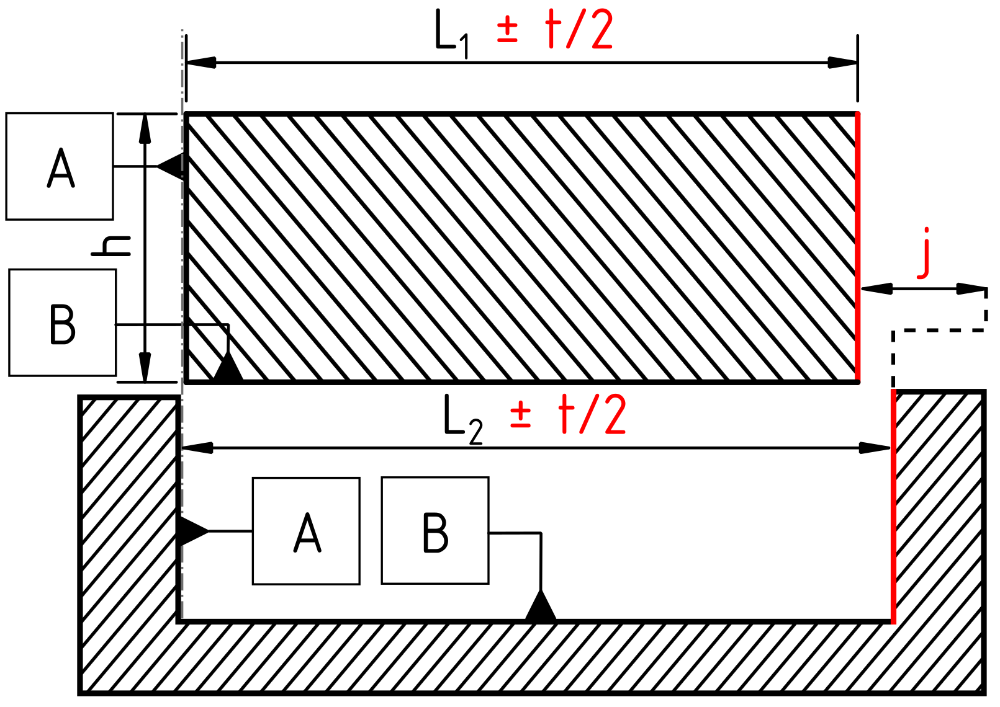
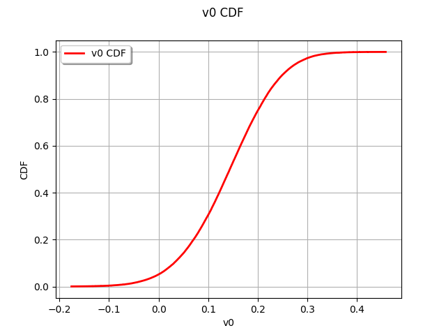

Ex 1: Analytical Reference Model (2D / 4-DOF)
This notebook establishes the baseline statistical tolerance analysis for the minimal 1.5D/2D assembly: a rigid square part that must fit within a square pocket.
Hypotheses & Setup (from Thesis Section 4.2.1):
Dimensions: Male part \(L_1 = 99.8\) mm, Female pocket \(L_2 = 100\) mm, Feature width \(h = 10\) mm.
Tolerance: \(t = 0.31\) mm applied to the two interacting features.
Capability: Target process capability \(C_p = 1\).
Degrees of Freedom: 4 variables in total.
\(u_{d4}, \gamma_{d4}\) for the Planar Feature on Part 2 (Pocket).
\(u_{d5}, \gamma_{d5}\) for the Planar Feature on Part 1 (Square Part).
Limit State: The standard physical clearance \(j\) must remain positive. The continuous slack variable transformation (\(s\)) is not required for this purely analytical Monte Carlo evaluation.

Defining the “Max Sigma” Baseline
Before introducing epistemic uncertainty and exploring the credal set, we must establish a precise probabilistic baseline. We evaluate the assembly at the boundary of the capability constraint. This assumes the manufacturing process uses the maximum allowable variance dictated by \(t\) and \(Cq_p\).
For a planar feature, the maximal standard deviations for translation and rotation, assuming independent centered normal distributions, are extracted from the local defect expression:
where \(y_{\max} = h/2\).
[1]:
import openturns as ot
import numpy as np
import otaf
# Geometric parameters
L1 = 99.8 # Nominal length of the male piece (Part 1)
L2 = 100.0 # Nominal length of the female pocket (Part 2)
h = 10.0 # Nominal width of the features
y_max = h / 2.0
# Tolerance and Capability
t = 0.31
Cqp = 1.0
# Maximal allowable standard deviations based on the capability constraint
sigma_target = t / (6 * Cqp)
sigma_u_max = sigma_target
sigma_gamma_max = sigma_target / y_max
print(f"Max Translational Std Dev (sigma_u_max): {sigma_u_max:.5f}")
print(f"Max Rotational Std Dev (sigma_gamma_max): {sigma_gamma_max:.5f}")
Max Translational Std Dev (sigma_u_max): 0.05167
Max Rotational Std Dev (sigma_gamma_max): 0.01033
Analytical Assembly Function
The assembly constraint is the clearance \(j = X_2 - X_1\), which must remain strictly positive across the entire width of the feature. Because the parts can rotate, the minimum clearance will always occur at one of the extremities (\(+y_{\max}\) or \(-y_{\max}\)).
The function calculates the physical position of the top and bottom corners of both features and extracts the minimum resulting gap.
[2]:
def analytical_assembly_model_4_DOF(sample_of_defects, round_val=12):
"""
Calculate the minimum spatial clearance between the two parts.
Parameters
----------
sample_of_defects : ot.Sample
OpenTURNS sample containing [u_d4, gamma_d4, u_d5, gamma_d5]
round_val : int
Decimal rounding to handle floating point noise.
Returns
-------
ot.Sample
The minimum gap j for each realization.
"""
size = sample_of_defects.getSize()
desc = sample_of_defects.getDescription()
# Safely extract variables based on thesis nomenclature
zero_array = np.zeros((size, 1))
smp_u4 = np.array(sample_of_defects.getMarginal(["u_d4"])) if "u_d4" in desc else zero_array
smp_gamma4 = np.array(sample_of_defects.getMarginal(["gamma_d4"])) if "gamma_d4" in desc else zero_array
smp_u5 = np.array(sample_of_defects.getMarginal(["u_d5"])) if "u_d5" in desc else zero_array
smp_gamma5 = np.array(sample_of_defects.getMarginal(["gamma_d5"])) if "gamma_d5" in desc else zero_array
# Part 1 (Male) displaced geometry at extremities
# Displacement = nominal + translation +/- lever arm effect of rotation
X1_corners = np.asarray([
L1 + smp_u5 - y_max * smp_gamma5,
L1 + smp_u5 + y_max * smp_gamma5
])
# Part 2 (Female) displaced geometry at extremities
X2_corners = np.asarray([
L2 - smp_u4 - y_max * smp_gamma4,
L2 - smp_u4 + y_max * smp_gamma4
])
# The physical gap is evaluated at both corners, the minimum dictates collision
gaps = X2_corners - X1_corners
min_gap = np.expand_dims(np.squeeze(gaps.min(axis=0)), axis=1).round(round_val).tolist()
return ot.Sample(min_gap)
Monte Carlo Propagation
We estimate the reference probability of failure. According to the equal allocation hypothesis, this maximum standard deviation configuration should yield a \(P_f \approx 5\%\).
[3]:
# Fixed seed for reproducible reference
ot.RandomGenerator.SetSeed(888)
size_MC = int(1e5)
# Constructing the distribution using the otaf library and thesis nomenclature
deviation_vector = otaf.distribution.get_composed_normal_defect_distribution(
defect_names=["u_d4", "gamma_d4", "u_d5", "gamma_d5"],
sigma_dict={"u_": sigma_u_max, "gamma_": sigma_gamma_max}
)
# Sample and evaluate
max_defect_sample = deviation_vector.getSample(size_MC)
clearance_sample = analytical_assembly_model_4_DOF(max_defect_sample)
clearance_distribution = ot.UserDefined(clearance_sample)
# Compute Probability of Failure (Gap <= 0)
pf_baseline = clearance_distribution.computeCDF(0.0)
print(f"Reference Probability of Failure at Max Sigma: {pf_baseline:.4%}")
WARNING:root:No mu_dict passed, initializing all unspecified means to 0.0
Reference Probability of Failure at Max Sigma: 5.1710%
[4]:
# Visualize the clearance CDF
clearance_distribution.drawCDF()
[4]:

[ ]: